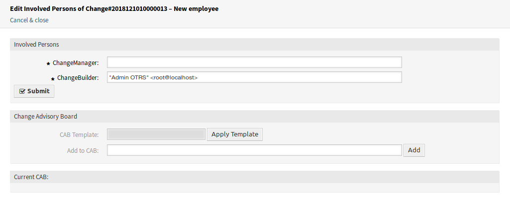
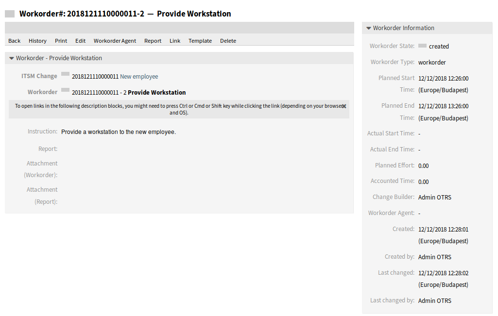
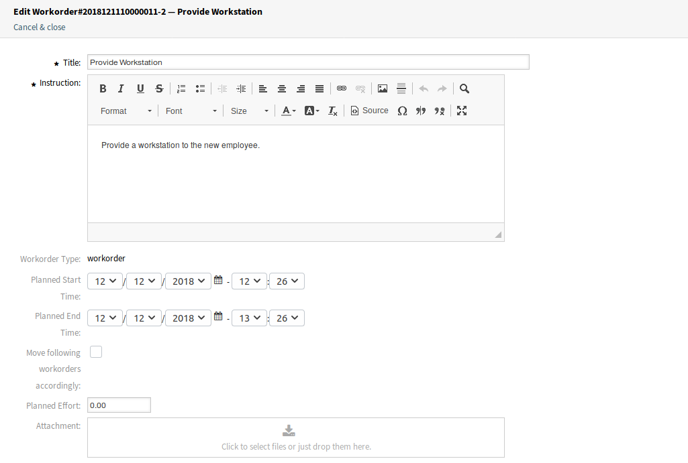
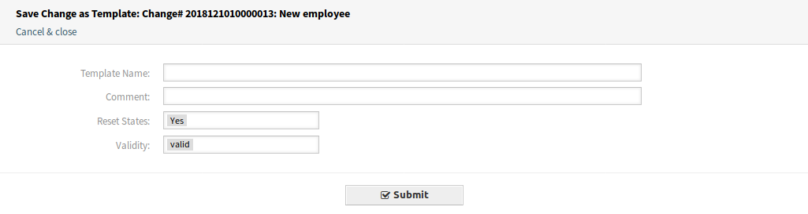
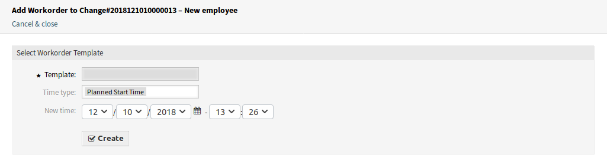

Áttekintés¶
Ez a képernyő a változások áttekintőjét adja.

ITSM változások áttekintő képernyő
A változások szűrhetők az áttekintő felületi elem fejlécén lévő állapotnévre kattintva. Létezik egy Összes lehetőség az összes változás megtekintéséhez. Az állapotnevek utáni számok azt jelzik, hogy hány változás van az egyes állapotokban.
Lásd még
Nézze meg az ITSMChange::Frontend::AgentITSMChange###Filter::ChangeStates beállítást azon munkamegrendelés-állapotok meghatározásához, amelyek szűrőkként lesznek használva az áttekintőben.
Az oldalanként megjelenített változások számának korlátozásához:
- Kattintson a fogaskerék ikonra az áttekintő fejlécének jobb felső sarkában.
- Válassza ki az oldalanként megjelenített változások legnagyobb számát.
- Kattintson az Elküldés gombra.
A megjelenített attribútumok a rendszerbeállításokon keresztül határozhatók meg. Nem minden attribútum van megjelenítve alapértelmezetten. A lehetséges attribútumok a következők:
ActualEndTime- Dátum és idő, amikor a változás megvalósítása befejeződött.
ActualStartTime- Dátum és idő, amikor a változás megvalósítása elkezdődött.
Category- A változás kategóriája vagy típusa.
ChangeBuilder- A változás-összeállító neve.
ChangeManager- A változásmenedzser neve.
ChangeNumber- A rendszer által előállított változásszám.
ChangeState- A változás állapota.
ChangeStateSignal- Közlekedési lámpaként megjelenített változásállapot-jelző.
ChangeTime- Dátum és idő, amikor a változást módosították.
ChangeTitle- A változás neve.
CreateTime- Dátum és idő, amikor a változást létrehozták.
DynamicField_ChangeFieldName- Dinamikus mező, amely hozzá van rendelve a munkamegrendeléshez.
Impact- A változás várható hatása.
PlannedEndTime- Tervezett változás megvalósítás befejezési dátuma és ideje.
PlannedStartTime- Tervezett változás megvalósítás kezdeti dátuma és ideje.
Priority- A változás prioritási szintje.
RequestedTime- Az ügyfél kívánt megvalósítási dátuma.
Services- A változás által érintett szolgáltatások.
WorkOrderCount- A változáshoz kapcsolódó munkamegrendelések száma.
Lásd még
Nézze meg az ITSMChange::Frontend::AgentITSMChange###ShowColumns beállítást a megjelenített attribútumok meghatározásához.
Egy változás részleteinek megtekintéséhez:
- Kattintson egy változás sorára.

ITSM változásnagyítás képernyő
A Változásnagyítás képernyő saját menüvel rendelkezik.
- Vissza
- Ez a menüpont visszaviszi az előző képernyőre.
- Előzmények
Ez a menüpont új ablakot nyit meg a változás előzményeinek megtekintéséhez.

ITSM változáselőzmények képernyő
- Nyomtatás
- Ez a menüpont egy PDF-fájlt nyit meg a képernyő nyomtatóbarát verziójának megtekintéséhez. Elmentheti vagy kinyomtathatja ezt a PDF-fájlt.
- Szerkesztés
Ez a menüpont új ablakot nyit meg a változás szerkesztéséhez.

ITSM változás szerkesztése képernyő
- Résztvevő személyek
Használja ezt a képernyőt, hogy személyeket adjon a változáshoz.
Résztvevő személyek képernyő
- Változásmenedzser *
Változásmenedzser jogosultságokat rendel hozzá egy ügyintézőhöz a jelenlegi változásnál.
Megjegyzés
Csak olyan ügyintéző adható hozzá változásmenedzserként, aki az itsm-change-manager csoport tagja.
- Változás-összeállító *
Azt az ügyintézőt határozza meg, aki a jelenlegi változást kidolgozza és meghatározza. Egy új változás létrehozásakor a jelenlegi ügyintéző automatikusan beírásra kerül változás-összeállítóként.
Megjegyzés
Csak olyan ügyintéző adható hozzá változás-összeállítóként, aki az itsm-change-builder csoport tagja.
- Változásmenedzsment-tanács
- Emberek csoportját határozza meg, amely ügyintézőket és ügyfeleket tartalmazhat.
- Munkamegrendelés hozzáadása
Használja ezt az ablakot, hogy új munkamegrendeléseket adjon a változáshoz.

Munkamegrendelés hozzáadása képernyő
A következő beállítások akkor érhetők el, ha hozzáadja vagy szerkeszti ezt az erőforrást. A csillaggal jelölt mezők kitöltése kötelező.
- Cím *
- Ennek az erőforrásnak a neve. Bármilyen típusú karakter beírható ebbe a mezőbe, beleértve a nagybetűket és a szóközt is. A név megjelenik az áttekintő táblázatban.
- Utasítás *
- A munkamegrendelés hosszabb szöveges leírása arról, hogy mit kell itt elvégezni.
- Munkamegrendelés-típus
- A munkamegrendelés állapotának kiválasztása. A típusok az Általános katalógus
ITSM::ChangeManagement::WorkOrder::Typeosztályában vannak meghatározva. - Tervezett kezdési idő
- Egy tervezett kezdési idő kiválasztása a munkamegrendeléshez.
- Tervezett befejezési idő
- Egy tervezett befejezési idő kiválasztása a munkamegrendeléshez.
- Tervezett ráfordítás
- Egy érték megadása tetszőleges munkaegységben a tervezett ráfordítás megadásához.
- Melléklet
- Kapcsoló fájlok és dokumentumok csatolását engedélyezi.
Egy munkamegrendelés hozzáadása után a Munkamegrendelés-nagyítás képernyő nyílik meg egy új böngészőlapon.
Munkamegrendelés-nagyítás képernyő
A Munkamegrendelés-nagyítás képernyő saját menüvel rendelkezik.
- Vissza
- Ez a menüpont visszaviszi az előző képernyőre.
- Előzmények
Ez a menüpont új ablakot nyit meg a munkamegrendelés előzményeinek megtekintéséhez.

Munkamegrendelés-előzmények képernyő
- Nyomtatás
- Ez a menüpont egy PDF-fájlt nyit meg a képernyő nyomtatóbarát verziójának megtekintéséhez. Elmentheti vagy kinyomtathatja ezt a PDF-fájlt.
- Szerkesztés
Ez a menüpont új ablakot nyit meg a munkamegrendelés szerkesztéséhez.
Munkamegrendelés szerkesztése képernyő
- A követő munkamegrendelések áthelyezése eszerint
- Ha ez be van jelölve, akkor a következő munkamegrendelések át lesznek helyezve az időben a Tervezett kezdési idő és a Tervezett befejezési idő mezőkben beállított idők szerint.
- Munkamegrendelés-ügyintéző
Használja ezt a menüpontot, hogy hozzárendeljen egy ügyintézőt a munkamegrendeléshez.

Munkamegrendelés-ügyintéző szerkesztése képernyő
Megjegyzés
Csak olyan ügyintéző adható hozzá munkamegrendelés-ügyintézőként, aki az itsm-change csoport tagja.
- Jelentés
Használja ezt a menüpontot a munkamegrendelésen elvégzett feladatok dokumentálásához. Ez a képernyő használható a munkamegrendelés naplójaként.

Munkamegrendelés-jelentés képernyő
- Jelentés *
- Ez a jelentés törzse. Mivel ugyanaz a szövegdoboz van az összes jelentéshez, időbélyegek hozzáadása ajánlott minden egyes bejegyzéshez.
- Állapot
A munkamegrendelés következő állapota.
Lásd még
A lehetséges következő állapotokat a munkamegrendelés Állapotgép határozza meg, de az állapotok feltételek használatával is szűrhetők.
- Elszámolt idő
- Az elszámolt idő hozzáadása időegységekben.
- Melléklet
- Kapcsoló fájlok és dokumentumok csatolását engedélyezi.
- Összekapcsolás
Ez a menüpont az OTRS szabványos összekapcsolás képernyőjét nyitja meg. A munkamegrendelések összekapcsolhatók szolgáltatásokkal vagy jegyekkel. A meglévő kapcsolatokat is itt lehet kezelni.
Munkamegrendelés összekapcsolása képernyő
- Sablon
Használja ezt a képernyőt, hogy sablonként mentse el a munkamegrendelést.
Munkamegrendelés mentése sablonként
- Sablonnév *
- Ennek az erőforrásnak a neve. Bármilyen típusú karakter beírható ebbe a mezőbe, beleértve a nagybetűket és a szóközt is. A név megjelenik az áttekintő táblázatban.
- Megjegyzés
További információk hozzáadása ehhez az erőforráshoz.
Megjegyzés
Ajánlott egy verziószám hozzáadása ebben a mezőbe, hogy egyszerűbb legyen azonosítani a megfelelő sablont.
- Állapotok visszaállítása
- Az összes állapot visszaállításra kerül, ha Igen van kiválasztva.
- Érvényesség
- Állítsa be ennek az erőforrásnak az érvényességét. Minden erőforrás csak akkor használható az OTRS-ben, ha ez a mező érvényes értékre van állítva. Ennek a mezőnek az érvénytelen vagy átmenetileg érvénytelen értékre állításával letiltja az erőforrás használatát.
- Törlés
Használja ezt a menüpontot a munkamegrendelés törléséhez.

Munkamegrendelés törlése párbeszédablak
- Nyomtatás
- Ez a menüpont egy PDF-fájlt nyit meg a képernyő nyomtatóbarát verziójának megtekintéséhez. Elmentheti vagy kinyomtathatja ezt a PDF-fájlt.
- Szerkesztés
Ez a menüpont új ablakot nyit meg a változás szerkesztéséhez.
ITSM változás szerkesztése képernyő
- Munkamegrendelés hozzáadása (sablonból)
Használja ezt a képernyőt, hogy munkamegrendelést adjon hozzá sablonból.
Munkamegrendelés hozzáadása sablonból képernyő
- Sablon *
- Egy munkamegrendelés-sablon kiválasztása a munkamegrendelések listájából.
- Időtípus
- Az időtípus kiválasztása, amelyet felül szeretne bírálni a következő mezőben.
- Új idő
- Egy új idő megadása a fent kiválasztott időtípushoz.
Lásd még
Munkamegrendelés-sablonok a Munkamegrendelés-nagyítás képernyőn lévő Sablon menüponttal hozhatók létre.
- Feltételek
Használja ezt a képernyőt, hogy új feltételeket adjon a változáshoz.

Feltétel áttekintő képernyő
Megjegyzés
A meghatározott feltételek nem egy bizonyos sorrendben hajtódnak végre.
Egy új feltétel hozzáadásához:
- Kattintson az Új feltétel hozzáadása gombra.
Egy feltétel szerkesztéséhez:
- Kattintson egy feltételre a feltételek listájában.
Egy feltétel törléséhez:
- Kattintson a kuka ikonra a feltételek listájában.
- Kattintson az OK gombra a megerősítő párbeszédablakban.
A Feltétel hozzáadása és a Feltétel szerkesztése képernyők három felületi elemből állnak.

Feltétel hozzáadása képernyő
A Feltétel felületi elemben:
- Név *
Ennek az erőforrásnak a neve. Bármilyen típusú karakter beírható ebbe a mezőbe, beleértve a nagybetűket és a szóközt is. A név megjelenik az áttekintő táblázatban.
Megjegyzés
A feltételek név szerint vannak rendezve. Használjon 100, 200, stb. előtagokat a rendezési sorrend beállításához. Az összes feltétel kiértékelésre kerül a helyzetétől függetlenül.
- Illeszkedés
- Kifejezések illesztési típusa.
- Érvényesség
- Állítsa be ennek az erőforrásnak az érvényességét. Minden erőforrás csak akkor használható az OTRS-ben, ha ez a mező érvényes értékre van állítva. Ennek a mezőnek az érvénytelen vagy átmenetileg érvénytelen értékre állításával letiltja az erőforrás használatát.
- Megjegyzés
- Adjon további információkat ehhez az erőforráshoz. Mindig ajánlott egy teljes mondattal kitölteni ezt a mezőt az erőforrás leírásaként a jobb érthetőségért, mert a megjegyzés is megjelenik az áttekintő táblázatban.
A Kifejezések felületi elemen adható hozzá a kifejezés. A kifejezések illesztési típusa (VAGY vagy ÉS) fent határozható meg.
A Műveletek felületi elemen a végrehajtandó műveletek adhatók hozzá, ha a kifejezések teljesülnek. A beállítás művelet azt engedélyezi, hogy a kijelölt attribútum egy adott értékre legyen beállítva, ha a meghatározott feltétel igaz. Másrészről a zárolás művelet befagyasztja a kijelölt attribútumot egészen addig, amíg a meghatározott feltétel igaz, azaz egy kézi változtatás nem lehetséges.
Megjegyzés
A műveletek abban a sorrendben lesznek feldolgozva, ahogy beállították azokat.
- Összekapcsolás
Ez a menüpont az OTRS szabványos összekapcsolás képernyőjét nyitja meg. A változások összekapcsolhatók bármilyen más egyéb objektummal, mint például GyIK bejegyzésekkel, szolgáltatásokkal, jegyekkel vagy konfigurációelemekkel. A meglévő kapcsolatokat is itt lehet kezelni.

ITSM változás összekapcsolása képernyő
- Időrés áthelyezése
Használja ezt a képernyőt a tervezett változás-megvalósítás időkeretének eltolásához.

Időrés áthelyezése képernyő
- Időtípus
- Az időtípus kiválasztása, amelyet felül szeretne bírálni a következő mezőben.
- Új idő
- Egy új idő megadása a fent kiválasztott időtípushoz.
- Sablon
Használja ezt a képernyőt, hogy sablonként mentse el a változást. Az új változások az Új (sablonból) menüpontban indíthatók sablonból.
Változás mentése sablonként
- Sablonnév *
- Ennek az erőforrásnak a neve. Bármilyen típusú karakter beírható ebbe a mezőbe, beleértve a nagybetűket és a szóközt is. A név megjelenik az áttekintő táblázatban.
- Megjegyzés
További információk hozzáadása ehhez az erőforráshoz.
Megjegyzés
Ajánlott egy verziószám hozzáadása ebben a mezőbe, hogy egyszerűbb legyen azonosítani a megfelelő sablont.
- Állapotok visszaállítása
- Az összes állapot visszaállításra kerül, ha Igen van kiválasztva.
- Érvényesség
- Állítsa be ennek az erőforrásnak az érvényességét. Minden erőforrás csak akkor használható az OTRS-ben, ha ez a mező érvényes értékre van állítva. Ennek a mezőnek az érvénytelen vagy átmenetileg érvénytelen értékre állításával letiltja az erőforrás használatát.